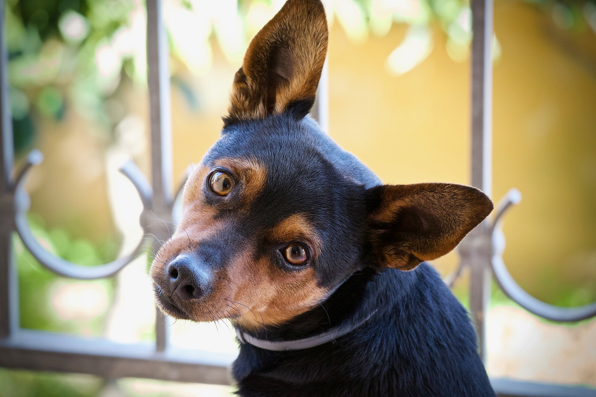

Por que adotar?
Se ainda tem dúvidas fique com essas imagens




O hábito das pessoas em comprar animais de estimação, ao invés da adoção de animais, fazem com que muitos pets permaneçam abandonados.
Uma das principais vantagens em adotar um pet ao invés de comprar, é não ter custos diretos. Dessa maneira, é possível investir o dinheiro que seria gasto para comprar um animal de estimação, com rações, acessórios, brinquedos, casinha, caminha, cuidados médicos preventivos e as outras demandas do animal.
Adotando um bichinho encontrado na rua, você contribui para a diminuição da população de animais abandonados. Pode parecer um gesto muito pequeno, mas faz diferença. E é importante também divulgar para amigos e conhecidos como esse gesto pode mudar o cenário de comercialização animal.
Um estudo feito pela Universidade Estadual de Nova York, nos Estados Unidos, mostrou que os bichos de estimação são ótimas companhias para combater o estresse. O experimento testava os níveis de tensão de pessoas em quatro situações: sozinhas, com seu parceiro, com seu animal e com seu parceiro e o animal. Eles descobriram, então, que a ocasião de maior tranquilidade foi apenas com o pet.
A tristeza também vai embora com mais facilidade para as pessoas que têm animais. Diversas pesquisas já mostraram que essa convivência reduz a sensação de solidão, a ansiedade e a depressão. Isso porque, quando o humano passa parte do dia com um bicho, ele passa a produzir mais hormônios como a ocitocina, a prolactina e a serotonina, que melhoram o humor.
Além do amor, os cães, gatos e outros pets ajudam de outra forma o coração dos donos. Segundo pesquisas dos Centros de Controle e Prevenção de Doenças (CDC) e do Instituto Nacional de Saúde (NIH), nos Estados Unidos, criar um bicho em casa ajuda a reduzir a pressão sanguínea, o colesterol e o nível de triglicérides. Consequentemente, servem de prevenção contra ataques do coração e outras doenças cardiovasculares.